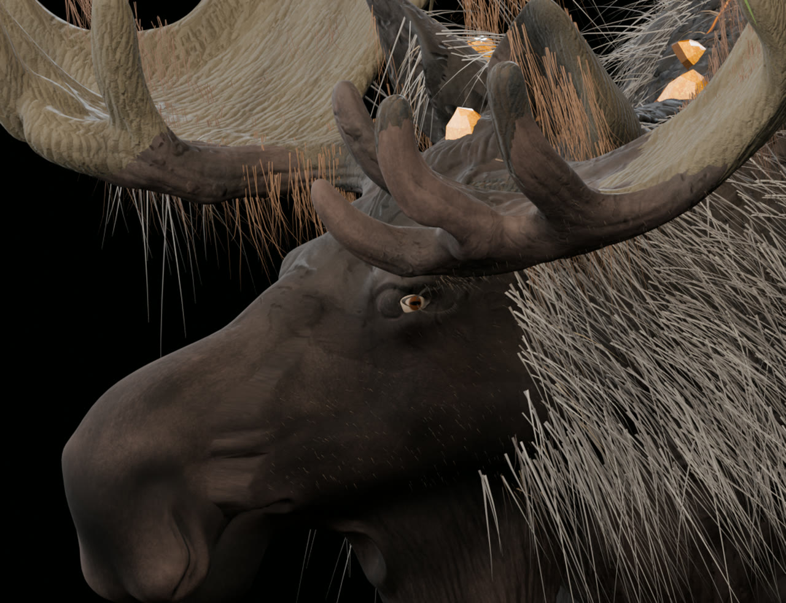
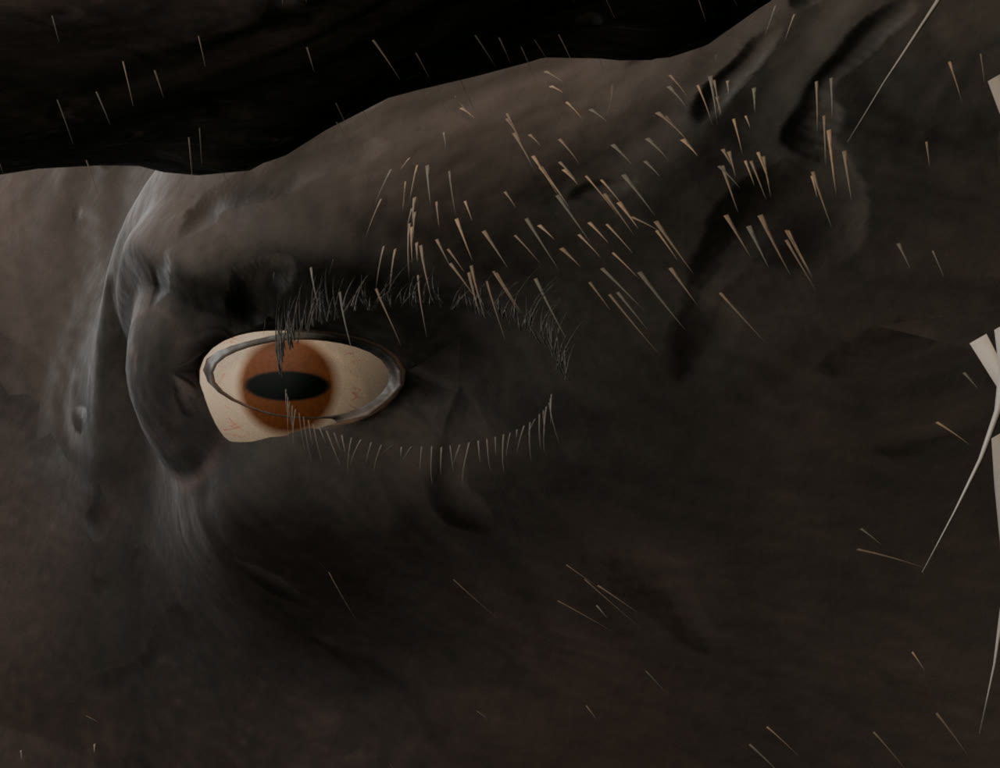
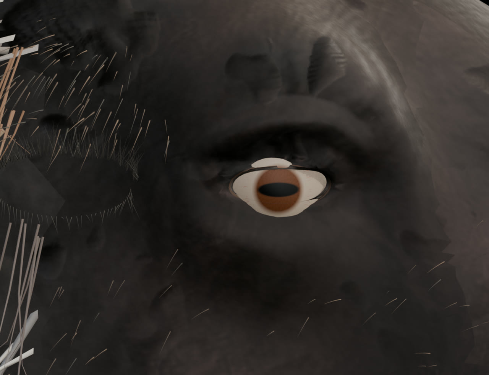
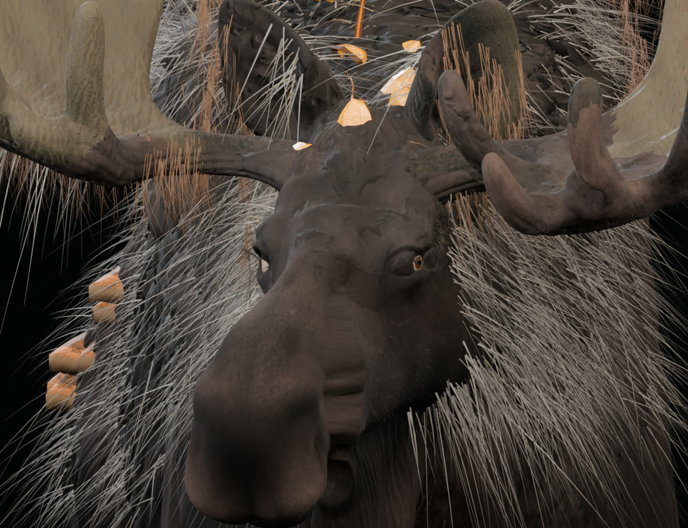

ZONA 2040 · MUTANT MOOSE · BLENDER 5.2
Лось V33B — настоящая 3D-модель
Это рендеры из новой редактируемой версии Blender, а не AI-концепты. Внесены изменения в палитру кожи, фактуру лица, 24 575 геометрических прядей, материал янтаря, центры глазных контроллеров и окружающую кожу. Прежняя V32X-B сохранена отдельно.





Технический статус
Редактируемый Blender (.blend) и экспортированный GLB с тремя анимационными клипами сохранены на FASEA в V33B_FORWARD_FACE_ANATOMICAL_ORBIT_REVIEW.
Внимание: это рабочая итерация, а не 1:1 и не AAAA-финал. Глазницы всё ещё требуют глубокого анатомического скульпта, шерсть выглядит слишком жёсткой, раны и янтарные включения требуют переработки меша и запекания PBR-материалов. В Unreal версия ещё не проверена.